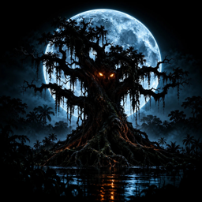

Forbidden Folklore
Legends the world was never told.
Forbidden Folklore publishes short horror stories based on Brazilian and South American folklore. Videos are produced with AI tools and are always labeled as AI-generated.
Forbidden Folklore Uploader
Forbidden Folklore Uploader is a private desktop tool used only by the channel owner. It uploads and schedules the channel's own videos to its own YouTube and TikTok accounts. It has no other users and is not offered to the public.